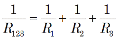
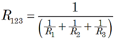
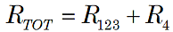
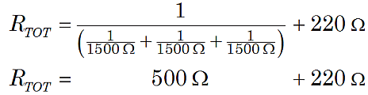

Figure 1. Series-parallel resistors.
|
Figure 1. Series-parallel resistors. |
In circuits that have resistors connected in both series and parallel, you must calculate the total resistance of the parallel and series parts separately. First, find the effective replacement for the parallel resistors, and then combine that result with the series resistances.
As before, use the formula for the parallel resistors:

or

Then, use the formula for series resistors:

For example, suppose the circuit in Figure 1 above has R1 = R2 = R3 = 1.5 kΩ, and R4 = 220 Ω. Then the total resistance for this circuit is

or RTOT = 720 Ω.
Note: It is important to convert to consistent units, if necessary. Above, we converted 1.5 kΩ to 1500 Ω so that our arithmetic consistently used ohms, not a mixture of ohms and kilohms.
In more complex circuits, having several combinations of parallel and series, you may have to apply this strategy several times.